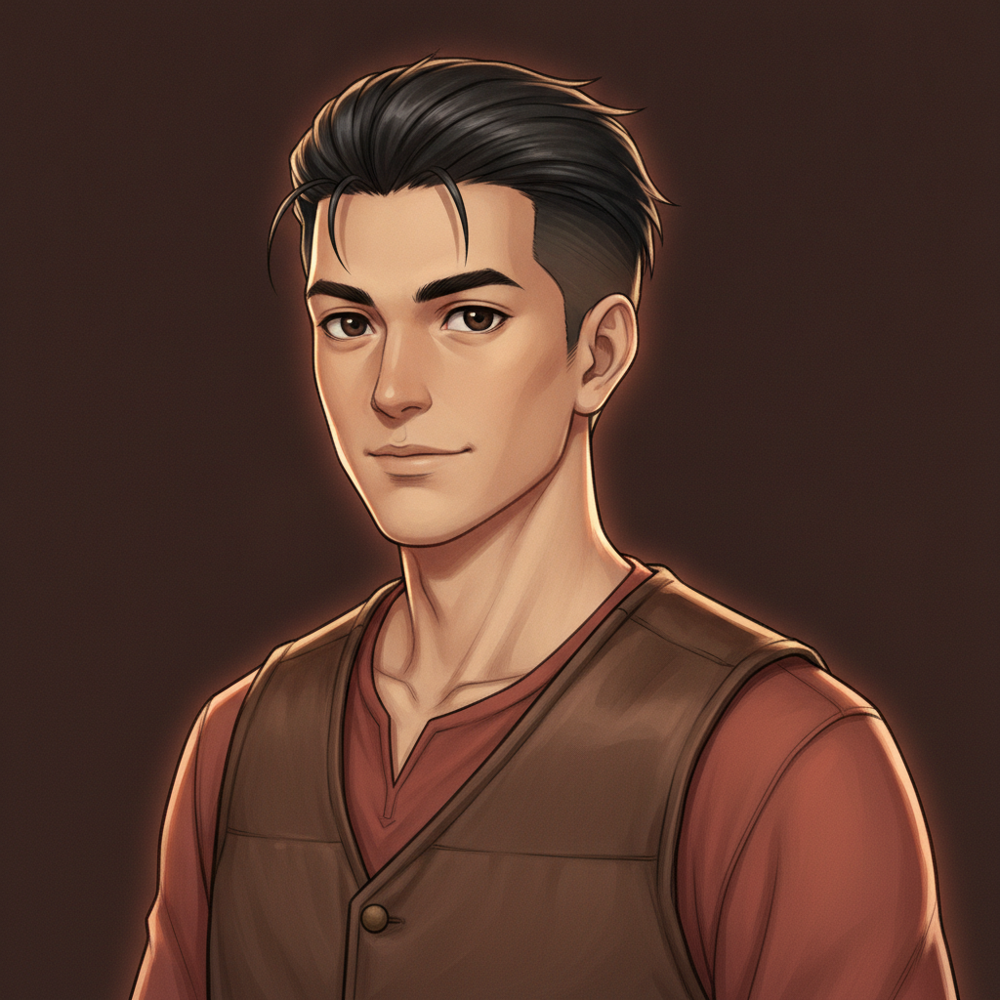
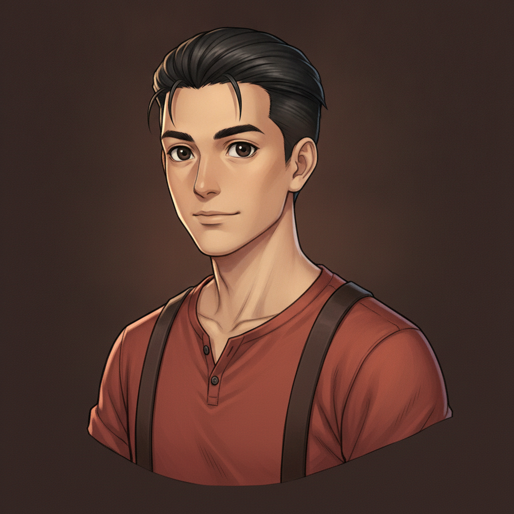
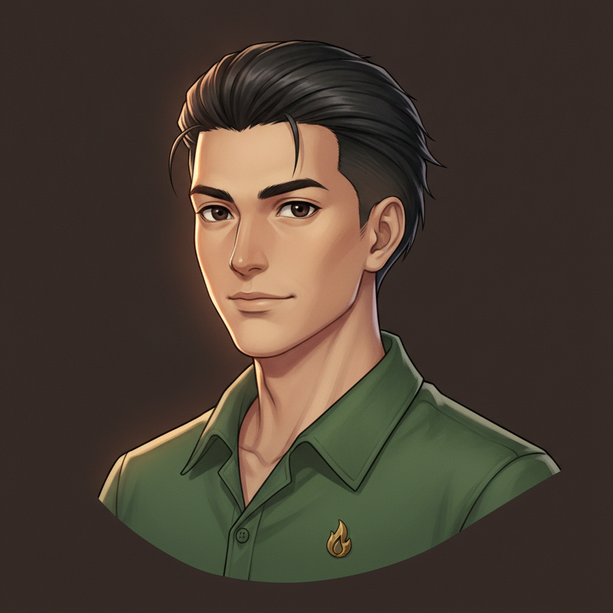
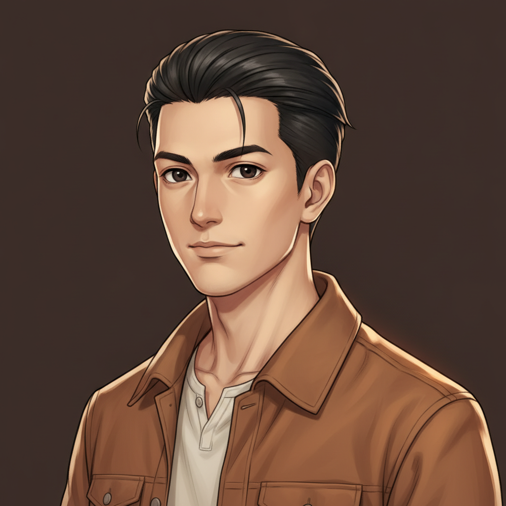
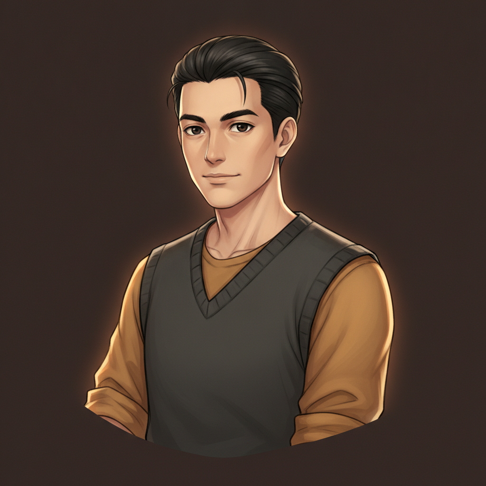
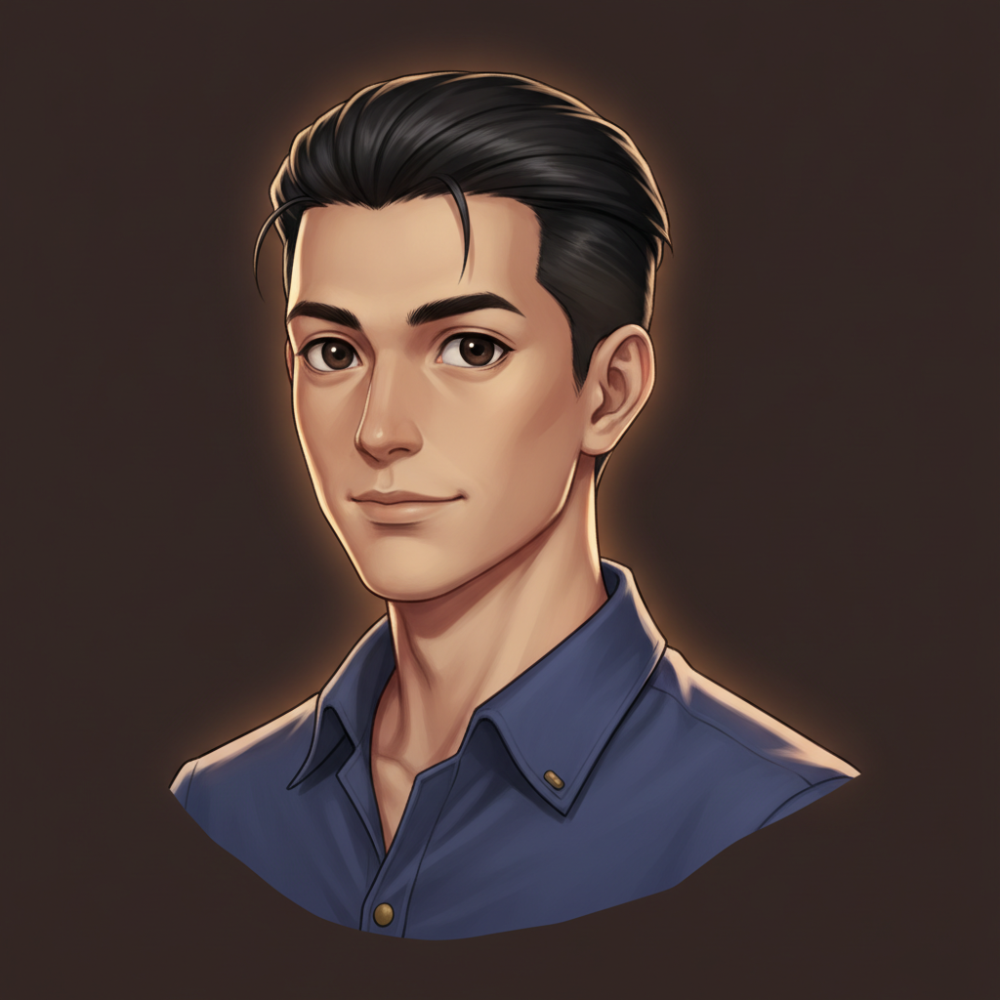

face locked (F2's Cole), head-and-chest crop, neutral expression, no goggles, no gloves. Six wardrobes.
G6 · leather vest & rust shirt (the F2 look, re-cropped)

the chosen round-4 outfit rendered at the new framing.
G1 · henley & suspenders

rust-red henley, rolled sleeves, simple dark suspenders.
G2 · green wool + flame pin

forest-green shirt with a tiny brass flame-shaped collar pin — a quiet lamplighter emblem.
G3 · canvas chore jacket

warm brown jacket, collar upturned, cream henley beneath.
G4 · knit vest over ochre

charcoal knitted vest, warm ochre sleeves pushed up.
G5 · indigo work shirt

clean indigo shirt with small brass details — closest crop of the set.